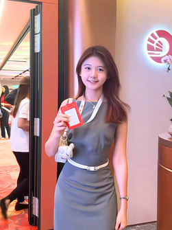

Offshore facilities
Co-designed a cylindrical mono-column FPSO for Limbayong (900–1,200 m water depth, 120 km offshore Sabah): hull stability, heave, VIM, topside zoning and helideck sizing. Placed 3rd at IEM.
Petroleum Engineering (Hons) with Data Analytics · APU
I'm a petroleum engineering undergraduate (CGPA 3.96/4.00) who works on full field-development problems: simulating waterfloods in tNavigator and CMG, diagnosing offshore wells with nodal analysis, and designing a deepwater FPSO for Sabah. I'm looking for internship and graduate roles in reservoir, production or field engineering, especially offshore assignments.

Why offshore
What I'd bring to a platform, an FPSO or an offshore operations team on day one.
Co-designed a cylindrical mono-column FPSO for Limbayong (900–1,200 m water depth, 120 km offshore Sabah): hull stability, heave, VIM, topside zoning and helideck sizing. Placed 3rd at IEM.
Nodal analysis of a mature, CO₂-rich well in the Dulang offshore field: IPR, VLP, choke and artificial lift screening, with whole-life economics.
IWCF Branch Meeting Student Representative. Topside designs separate hazardous process areas from accommodation and muster points, following standard offshore practice.
PADI Open Water Diver (2026). Comfortable working at sea and ready to complete BOSIET/HUET and offshore medicals when an assignment requires them.
Worked on resident ROV inspection, digital-twin condition monitoring, ultrasonic guided-wave anti-fouling and an AI leak-detection rover.
Multilingual (English, Malay, Mandarin). I've worked in multinational teams under hard deadlines and presented engineering decisions to industry panels.
Portfolio
Projects closest to petroleum and offshore work come first. Filter by category, then open any card to see the method, my role and the results.
Experience
Generated RM50,000 in revenue over 6 months through booth-based direct sales of 3D-printed consumer products. Handled customer acquisition, pricing and conversion.
Represented the student body at International Well Control Forum (IWCF) branch meetings.
Member of the Society of Petroleum Engineers (SPE) Malaysia student community.
Led the human resources portfolio on the committee of a hands-on engineering club.
Recognition
Toolkit
Education
Asia Pacific University of Technology & Innovation · CGPA 3.96/4.00 · Expected Sep 2027
Coursework includes Reservoir Engineering, Reservoir Simulation, Production Engineering, Well Testing, Formation Evaluation & Well Logging, and Engineering Mathematics.
I'm open to offshore internships, graduate engineer programmes and field engineering roles.
✉ jieyee.teh95@gmail.com in linkedin.com/in/jie-yee-teh-285977294 Download résumé (PDF)